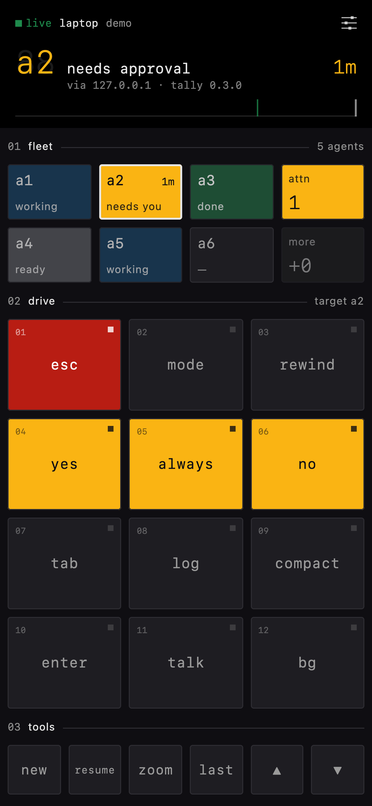
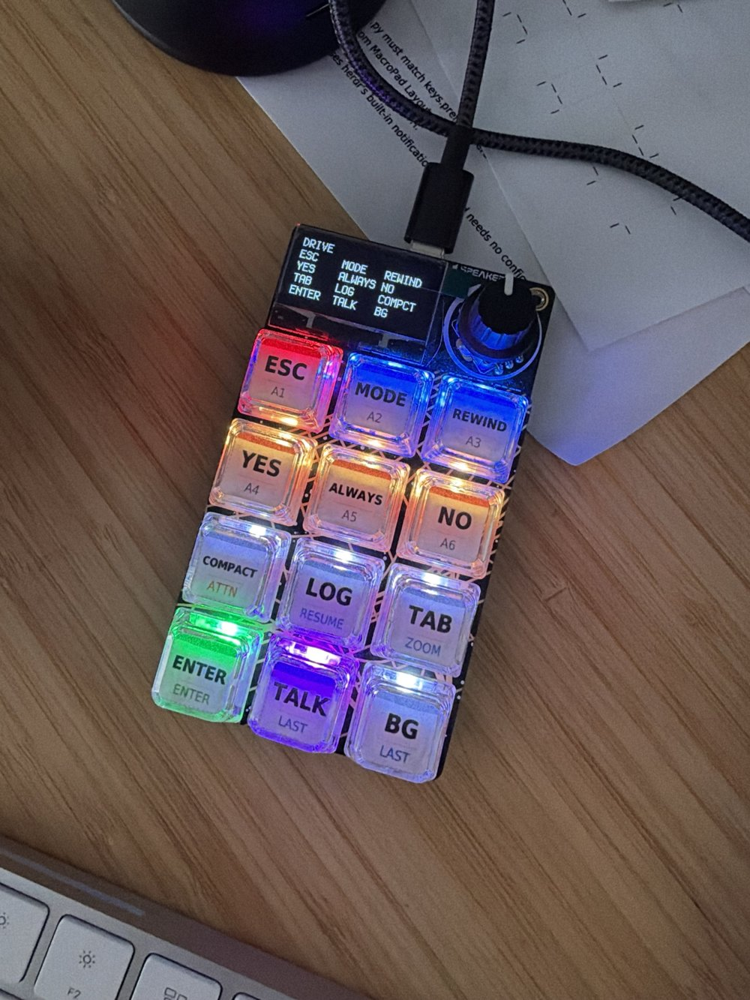

see
Six tiles mirror herdr's agent sidebar. An agent that needs you pulses amber with how long it has waited; attn jumps to whoever has waited longest.
control pad for claude code agents
Running several Claude Code agents means constantly checking which one is waiting on you. tally puts your herdr agents on a pad on your phone: one glance shows who's blocked, and one tap approves, interrupts or dictates to them, without switching windows.
$ go install github.com/sroberts/tally@latest

Six tiles mirror herdr's agent sidebar. An agent that needs you pulses amber with how long it has waited; attn jumps to whoever has waited longest.
Twelve keys drive the focused agent: approve once or always, deny, interrupt, switch mode, rewind, compact. Keys light only when they matter right now.
Type or dictate a prompt with your phone's keyboard mic and it lands in the agent you're looking at. Press enter on the pad to send it.
tally runs in the background next to herdr and acts on agents through herdr's socket, not by faking keystrokes, so it works while your editor or browser has focus. It works the same on macOS and Linux.
Needs Go 1.27+ and a running herdr. Or grab a binary for macOS or Linux from releases.
$ go install github.com/sroberts/tally@latestPut Tailscale on the machine running herdr and on your phone. In the admin console, turn on MagicDNS and HTTPS certificates. tally fetches and renews its certificate itself.
This runs tally in the background, now and at login, sets a password and prints a sign-in QR code.
$ tally install-agent --webScan the code with your phone's camera to open the pad already signed in, then add it to your home screen when it offers. It runs full screen and stays signed in.
Something off? tally doctor checks herdr, the background agent, the certificate and the pad. The full guide is in the README.

Prefer a physical button? vibe-macropad turns an Adafruit MacroPad RP2040 into the same pad: keys light by the same states, and its OLED shows who's waiting. Plug it in and tally finds it, alongside the browser pad or on its own.